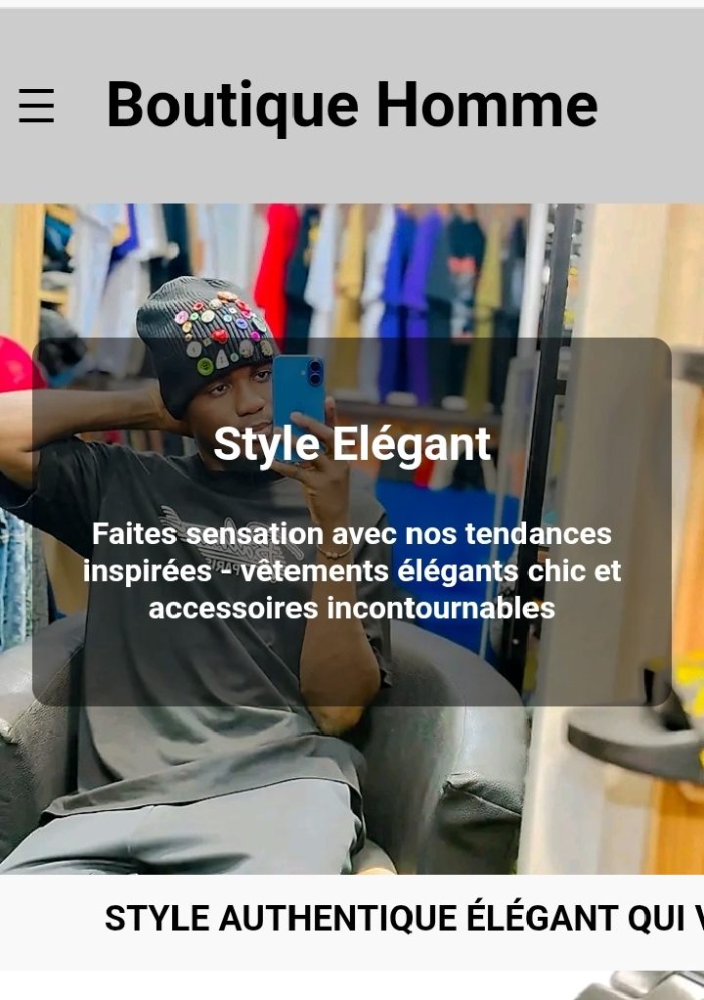

Mes projets

Site pour une boutique
Un site simple et responsive pour une petite boutique locale.

Site pour un restaurant
Un site vitrine moderne avec menu, boissons et contact WhatsApp.
Mes services
✔️ Sites simples et efficaces ✔️ Design responsive (adapté aux mobiles) ✔️ Intégration WhatsApp, formulaire de contact ✔️ Livraison rapide ✔️ Maintenance mensuelle disponible
Votre activité mérite un site web clair, rapide et qui donne confiance. Travaillons ensemble !